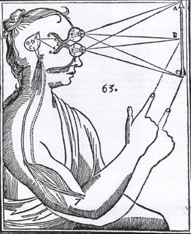
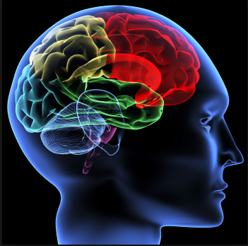
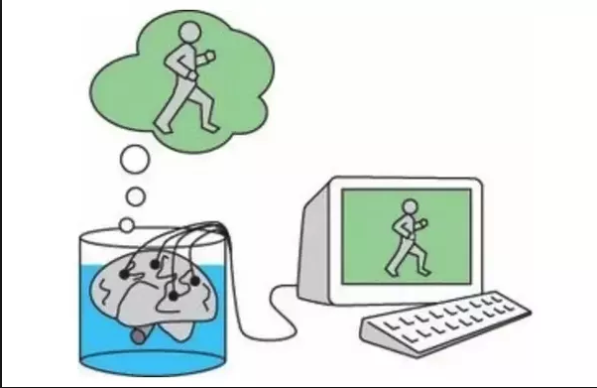
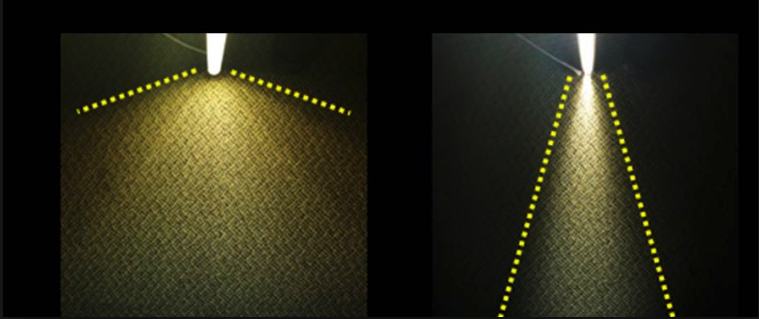
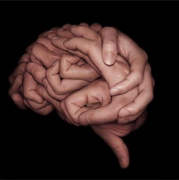
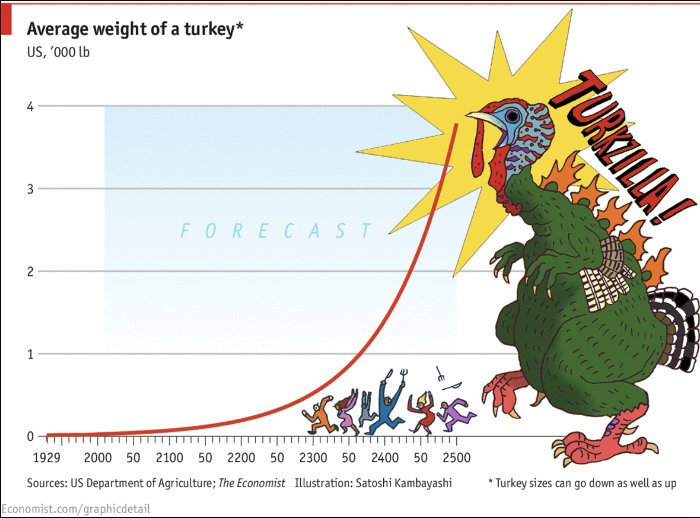
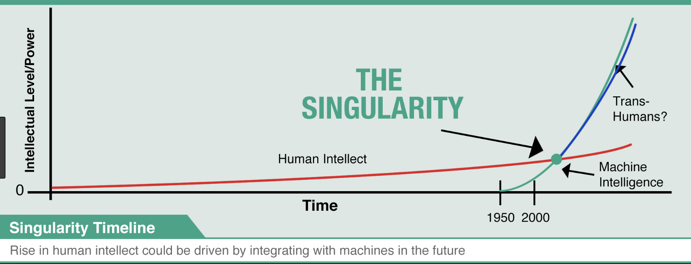

Inteligencia artificial
¿Es o no posible?
Inteligencia artificial fuerte y débil:
- Inteligencia artificial débil: “La computadora digital propiamente programada es útil para estudiar la mente”
- Inteligencia artificial fuerte: “Un programa de computadora literalmente tiene una mente”
- Argumentos a favor (Stuart Russell)
- Argumentos en contra desde una imposibilidad fáctica (John Searle)
- Argumentos en contra (Luciano Floridi)
Orden:
Problema de la cualificación en inteligencia artificial
- La inhabilidad de poder enmarcar todo en un conjunto de reglas lógicas
- Los agentes lógicos son vulnerables al problema de la cualificación
- Los sistemas de razonamiento probabilístico son más apropiados para los dominios abiertos como el comportamiento humano
- La experticia humana incluye el conocimiento de ciertas reglas, pero solo como “contexto holístico” o “trasfondo” en el que los humanos operan
- No hay una refutación del argumento, hay una aceptación del argumento seguida de una intuición de que es posible hacerlo, si se intenta seguir el comportamiento del cerebro humano
Problema cuerpo-mente
 El cerebro en una cubeta
  Conciencia

|
|
- Ontológica: cuando la existencia de algo es subjetiva (depende de algo). La picazón, cosquillas son ontológicamente subjetivas, existen solo en la mente de la persona.
- epistemológica: tiene que ver con qué tipo de conocimiento se tiene con respecto al objeto, si es que el saber de ese objeto depende de algún otro factor. El hecho de que Cristiano Ronaldo es mejor jugador que Messi es subjetivamente epistemológico.
- ontológica: cuando la existencia de algo es objetiva (no depende de nada). Las montañas son ontológicamente objetivas. No dependen de nada para existir.
- epistemológica: tiene que ver con qué tipo de conocimiento se tiene con respecto al objeto, si es que el saber de ese objeto no depende de ningún otro factor. Macri es presidente de Argentina, independientemente de que algunos crean que no es apto o no ganó justamente.
subjetividad:
objetividad:
El argumento del cuarto chino
|
El argumento del cuarto chino
- ¿Qué hay ahí para que sea una mente?
- ¿Qué hay en ese montón de células, operando ciegamente bajo las leyes de la física para que sea una mente?
- ¿Porque un cerebro puede ser una mente y un hígado no puede ser una mente?
gran misterio
La ciencia cognitiva
- La afirmación de que una computadora está ejecutando Word es epistemológicamente objetiva mientras que la existencia del programa en sí es ontológicamente subjetiva
- El error es cuando el poder computacional obtiene su propia relevancia sicológica
- ¿Podría una máquina pensar? Nosotros somo s máquinas ampliamente hablando y podemos pensar.
- ¿Puede una máquina hecha por el hombre pensar? no existe un obstáculo en principio para que esto ocurra
- ¿Se podría hacer con un material inorgánico? No sabemos por qué no sabemos cómo el cerebro lo hace
- ¿Es la computación definida por Alan Turing suficiente para lograr que las computadoras piensen? No porque está definida sintácticamente y esto no es suficiente para la semántica
1. ¿Si pasa? Entonces
¿qué hacemos?
2. Podría pasar
3. Crecimiento exponencial
4. Tarde o temprano va a pasar
5. Mejor prevenir que lamentar
6. Nos hemos equivocado antes
7. Investigación de expertos en la materia
8. Todavía no estamos listos
¿Sería correcto negar la posibilidad?
Conclusiones
- Argumento de la informalidad
- El problema cuerpo-mente las posturas a favor y en contra y la falta de estudio y análisis basados en la unidad sustancial
- Los estados mentales y cerebrales, la conciencia y la imposibilidad de definirla completamente
- La objetividad y subjetividad, ontológicas y epistemológicas, los modos de
- Existencia y el argumento del cuarto chino y la relevancia psicológica de las capacidades computacionales
- Las refutaciones de Floridi a la mayoría de hipótesis más aceptadas comúnmente
"we shape our buildings,
thereafter they shape us"
Winston Churchill
¡A tus órdenes!
Mil. José jaramillo
Buenos Aires, 28-IV-2018